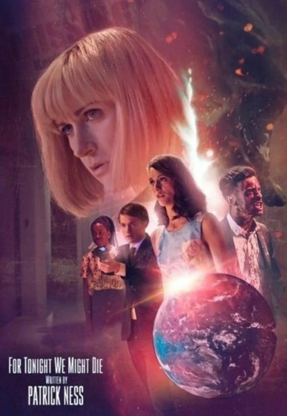

Весь 1-й сезон (8 серий)
Весь 1-й сезон (8 серий) |
For Tonight We Might Die
Дата выхода: 22 октября 2016
Формат: 50-минутный эпизод
| Варианты озвучек: | * Разные: смотрите по инструкции |
|---|---|
| Скачивание и просмотр: |
«Все знают, что ученики этой школы исчезают, они просто притворяются, что этого не происходит.»
Странные вещи творятся в Академии Коал-Хилл. Тени преследуют учеников, люди пропадают, и новый учитель по физике как-то с этим связана. Чарли, Эйприл, Рам и Таня должны объединиться, чтобы сразиться с Теневым Родом. Если всё пройдёт хорошо, то они смогут пережить вступительный вечер.
